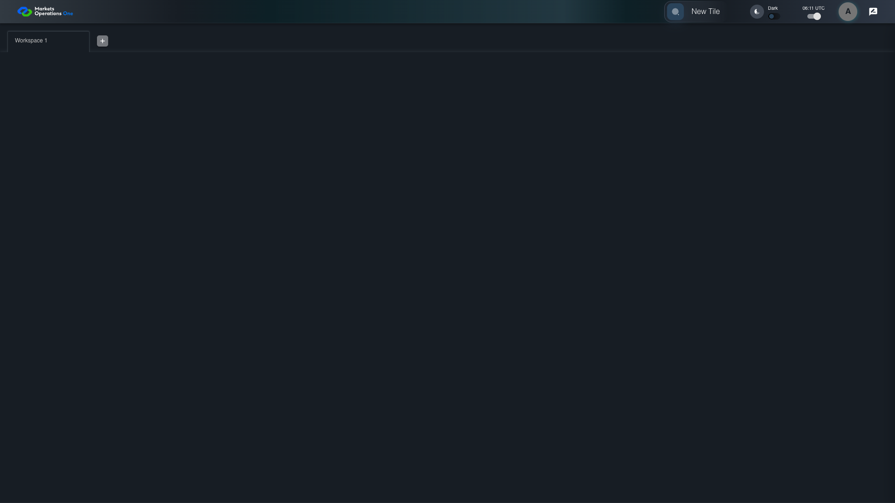
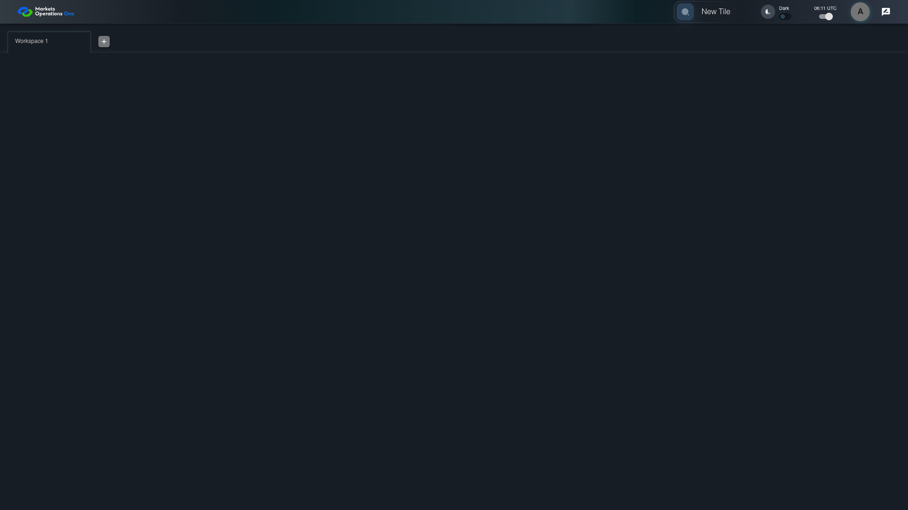

UX-028 responsive shell 1920x1080
PASS · application/run-050/ux-028-responsive-shell-1920x1080-cf3bfdd5899d-attempt-1 · ACTUAL_APPLICATION_LOCAL_SERVICES
Actual React shell. Controlled catalog, user identity, photo failures, and SystemJS tenant. Chromium only. Accessibility and layout outcomes are proposed probes; no approved conformance standard is inferred.
2026-10-22T06:11:52.814Z to 2026-10-22T06:11:55.606Z
Assertions and result · Artifact manifest · Exact run inputs and source hashes
Result SHA-256:f871fcb4137b406de0a5046c46418527fddcc879ed5a61a368469754ae1e3af9Screenshot capture: CAPTURED. Named frames: 9.
Step screenshot evidence: COMPLETE. 8/8 canonical steps have execution screenshots.
Canonical step timeline
Given USER-A has Home visible at 1920 by 1080 CSS pixels
Execution: PASSED.1. step-01 Visible state after step 1: Given USER-A has Home visible at 1920 by 1080 CSS pixels
2026-10-22T06:11:54.163Z · 1920×1080
Step: /Users/lushevol/code/github/ratan-release-impact/workbench/tasks/ui-test-coverage-20261022/test-cases.md:13161
SHA-256:106e8408635606cb738990b9d8a75964adc6c1a3762902b2a8294e29e4a39525When USER-A clicks the section labelled "New Tile" on the Home page
Execution: PASSED.2. step-02 Visible state after step 2: When USER-A clicks the section labelled "New Tile" on the Home page
2026-10-22T06:11:54.305Z · 1920×1080
Step: /Users/lushevol/code/github/ratan-release-impact/workbench/tasks/ui-test-coverage-20261022/test-cases.md:13162
SHA-256:c95af6dcf1093b9ff316a70c4769196d0234543b7f5e3b4b76b84fef1cabbd17Then The section labelled "Tile Options" on the Home page is visible within the viewport or its scroll area
Execution: PASSED.
3. step-03 Visible state after step 3: Then The section labelled "Tile Options" on the Home page is visible within the viewport or its scroll area
2026-10-22T06:11:54.384Z · 1920×1080
Step: /Users/lushevol/code/github/ratan-release-impact/workbench/tasks/ui-test-coverage-20261022/test-cases.md:13163
SHA-256:c95af6dcf1093b9ff316a70c4769196d0234543b7f5e3b4b76b84fef1cabbd17When USER-A presses "Escape" inside the section labelled "Tile Options" on the Home page
Execution: PASSED.
4. step-04 Visible state after step 4: When USER-A presses "Escape" inside the section labelled "Tile Options" on the Home page
2026-10-22T06:11:54.454Z · 1920×1080
Step: /Users/lushevol/code/github/ratan-release-impact/workbench/tasks/ui-test-coverage-20261022/test-cases.md:13164
SHA-256:29ffc89a175702b8107ed09b0e77faa806f8a8eb097a4bf55e561f26a937ad02Then The section labelled "Tile Options" on the Home page is hidden
Execution: PASSED.
5. step-05 Visible state after step 5: Then The section labelled "Tile Options" on the Home page is hidden
2026-10-22T06:11:54.692Z · 1920×1080
Step: /Users/lushevol/code/github/ratan-release-impact/workbench/tasks/ui-test-coverage-20261022/test-cases.md:13165
SHA-256:b0a9e33dd628237cb323330f1a730c32e361ed64468aac47b5c77f5dc5e9f0adWhen USER-A clicks the icon button with test ID "${MFE_APP_PREFIX_STYLE}_avatar_IconButton" on the Home page
Execution: PASSED.6. step-06 Visible state after step 6: When USER-A clicks the icon button with test ID "${MFE_APP_PREFIX_STYLE}_avatar_IconButton" on the Home page
2026-10-22T06:11:54.808Z · 1920×1080
Step: /Users/lushevol/code/github/ratan-release-impact/workbench/tasks/ui-test-coverage-20261022/test-cases.md:13166
SHA-256:bd34b8c7df07dd62fe1bb2642036c18c4edf4f71a8e34d55f2b83272a7b484bbThen The menu item with test ID "${MFE_APP_PREFIX_STYLE}_avatar_Profile" in the menu with identifier "menu-appbar-avatar" on the Home page is visible without overlap with the menu item labelled "Logout" in the menu with identifier "menu-appbar-avatar" on the Home page
Execution: PASSED.
7. step-07 Visible state after step 7: Then The menu item with test ID "${MFE_APP_PREFIX_STYLE}_avatar_Profile" in the menu with identifier "menu-appbar-avatar" on the Home page is visible without overlap with the menu item labelled "Logout" in the menu with identifier "menu-appbar-avatar" on the Home page
2026-10-22T06:11:54.978Z · 1920×1080
Step: /Users/lushevol/code/github/ratan-release-impact/workbench/tasks/ui-test-coverage-20261022/test-cases.md:13167
SHA-256:bd34b8c7df07dd62fe1bb2642036c18c4edf4f71a8e34d55f2b83272a7b484bbAnd The menu item labelled "Logout" in the menu with identifier "menu-appbar-avatar" on the Home page is enabled and reachable within the viewport
Execution: PASSED.
8. step-08 Visible state after step 8: And The menu item labelled "Logout" in the menu with identifier "menu-appbar-avatar" on the Home page is enabled and reachable within the viewport
2026-10-22T06:11:55.137Z · 1920×1080
Step: /Users/lushevol/code/github/ratan-release-impact/workbench/tasks/ui-test-coverage-20261022/test-cases.md:13168
SHA-256:bd34b8c7df07dd62fe1bb2642036c18c4edf4f71a8e34d55f2b83272a7b484bb
Additional named frames

The final visible state after the named test assertions.
2026-10-22T06:11:55.294Z · 1920×1080Step: Test source: /Users/lushevol/code/github/ratan-release-impact/workbench/e2e/audit-specs/ux-shell.spec.ts:113
SHA-256:
bd34b8c7df07dd62fe1bb2642036c18c4edf4f71a8e34d55f2b83272a7b484bbScreenshots establish visible state only. Assertions and traces support functional claims.